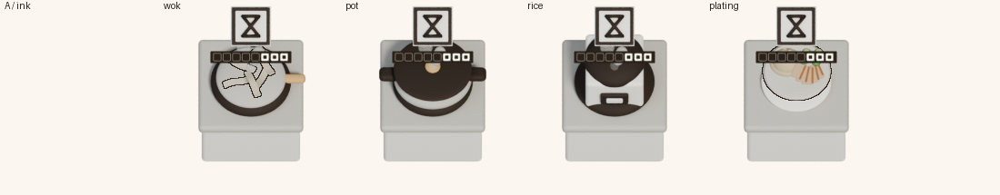
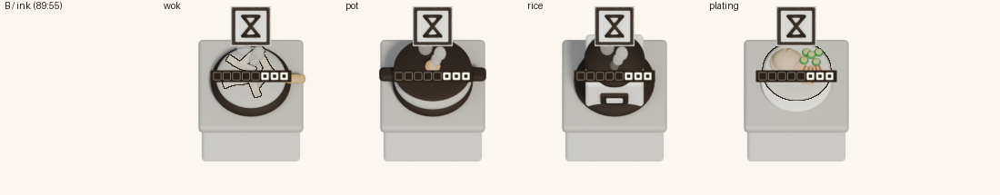
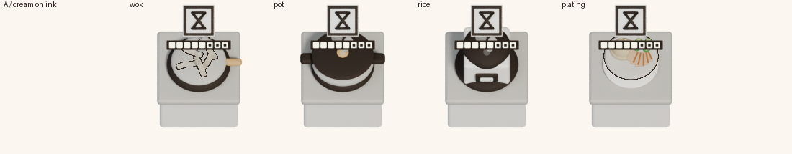
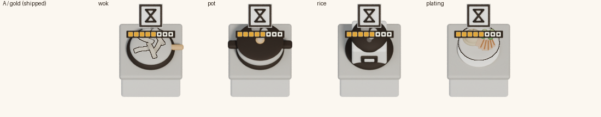

Round 8: selected bar A with gold cells and empty-cell ink marks, drawn cue, four-frame smoke loop (reduced motion: smoke-2). Alternatives retained as board-only comparisons. Steam rises behind the bar and plaque, without clipping or fading; tall-fixture scene review required. All estimates use the current manifest baseline; replacement colours/plaque ±1 KB transfer, same decoded canvas. Still savings estimate uses removed padded frame area and current page compression; exact costs require repacking. A-07 fire: assets/src/tabao-rush/effects/fire/fire-0.png.
light
Choice 1: bar

A / ink: No φ proportions; 89 px track. Replacement estimate ±1 KB, same decoded canvas. PERF-023: 2,427,954/8,000,000 B; PERF-024: 55,408,032/256,000,000 B

B / ink (89:55): φ: 89 px track / 55 px separation. Replacement estimate ±1 KB, same decoded canvas. PERF-023: 2,427,954/8,000,000 B; PERF-024: 55,408,032/256,000,000 B

A / cream: No φ proportions; 89 px track. Replacement estimate ±1 KB, same decoded canvas. PERF-023: 2,427,954/8,000,000 B; PERF-024: 55,408,032/256,000,000 B

A / gold (shipped): No φ proportions; 89 px track. Current pack baseline: shipped render. PERF-023: 2,426,954/8,000,000 B; PERF-024: 55,408,032/256,000,000 B